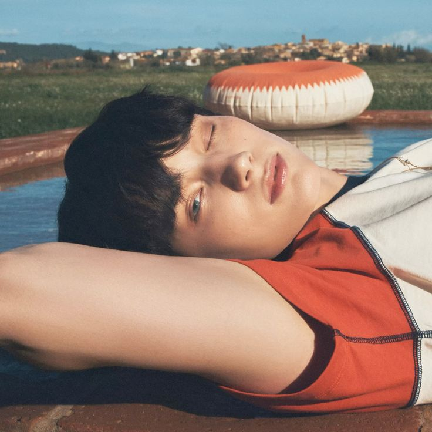

About
TOMORROW X TOGETHER, dibaca sebagai 'tomorrow by together'.
Debut pada tahun 2019 dengan lagu 'CROWN'.
Mereka adalah boy group dari Korea Selatan yang dibentuk oleh Bighit Music.
Memiliki tagline 'together under one dream in hopes of building new tomorrow'.
Terdapat lima member dengan Soobin sebagai leader, lalu ada Yeonjun, Beomgyu, Taehyun, dan Huening Kai
Meet the Members
Soobin
Soobin adalah leader TXT yang dikenal dengan kepribadian hangat dan lembut.
Ia punya vokal yang stabil dan jadi penyeimbang dalam grup.
Selain kemampuan menyanyi dan rap-nya, Soobin juga dikenal karena tinggi badannya yang mencolok dan visual yang menawan.
Sebagai leader, dia sangat perhatian dan bisa menjaga kekompakan para member dengan baik.
Yeonjun
Yeonjun adalah member paling karismatik dengan posisi sebagai main dancer dan lead rapper.
Ia dikenal karena ekspresi panggung yang kuat dan kemampuan menari yang luar biasa.
Yeonjun juga sering disebut sebagai ace karena bisa melakukan semuanya: nari, nyanyi, rap, bahkan modeling.
Dia adalah member pertama yang diperkenalkan ke publik oleh BigHit.
Beomgyu
Beomgyu punya pesona ceria dan selalu membawa suasana menyenangkan ke dalam grup.
Ia seorang all-rounder yang jago nyanyi, nari, dan juga ngerap.
Beomgyu juga sering terlibat dalam produksi lagu, serta dikenal karena selera humornya dan energi positif yang menular ke fans maupun member lainnya.
Taehyun
Taehyun adalah main vocalist TXT dengan suara yang kuat dan penuh emosi.
Ia dikenal sangat perfeksionis dan memiliki teknik vokal yang sangat bagus.
Selain itu, Taehyun juga sering menunjukkan pemikiran yang dewasa dan bijak, menjadikannya sosok yang tenang dan mendalam di antara para member.
Huening Kai

Huening Kai adalah maknae TXT yang penuh talenta dan pesona unik.
Ia punya suara lembut yang menenangkan dan sering jadi center perhatian dengan kepribadiannya yang imut dan quirky.
Selain menyanyi dan menari, Huening Kai juga bisa bermain berbagai alat musik, menunjukkan sisi artistiknya sejak usia muda.
Newest News
Setelah masa rehat tersebut, kini TXT mengabarkan akan tur konser bertajuk Act: Tomorrow.
Tur ini akan dimulai di Gocheok Sky Dome, Seoul, pada 22 dan 23 Agustus 2025.
TXT telah menyelesaikan tur pada Mei dengan total 23 penampilan di 13 negara.
Keterangan Bighit Music, konser di Seoul nanti juga akan dapat disaksikan secara daring melalui Weverse.
Bighit Music menambahkan bahwa rincian mengenai tanggal dan lokasi tur tambahan akan diumumkan, dikutip dari Antara, Sabtu, 21 Juni 2025.
tempo.com